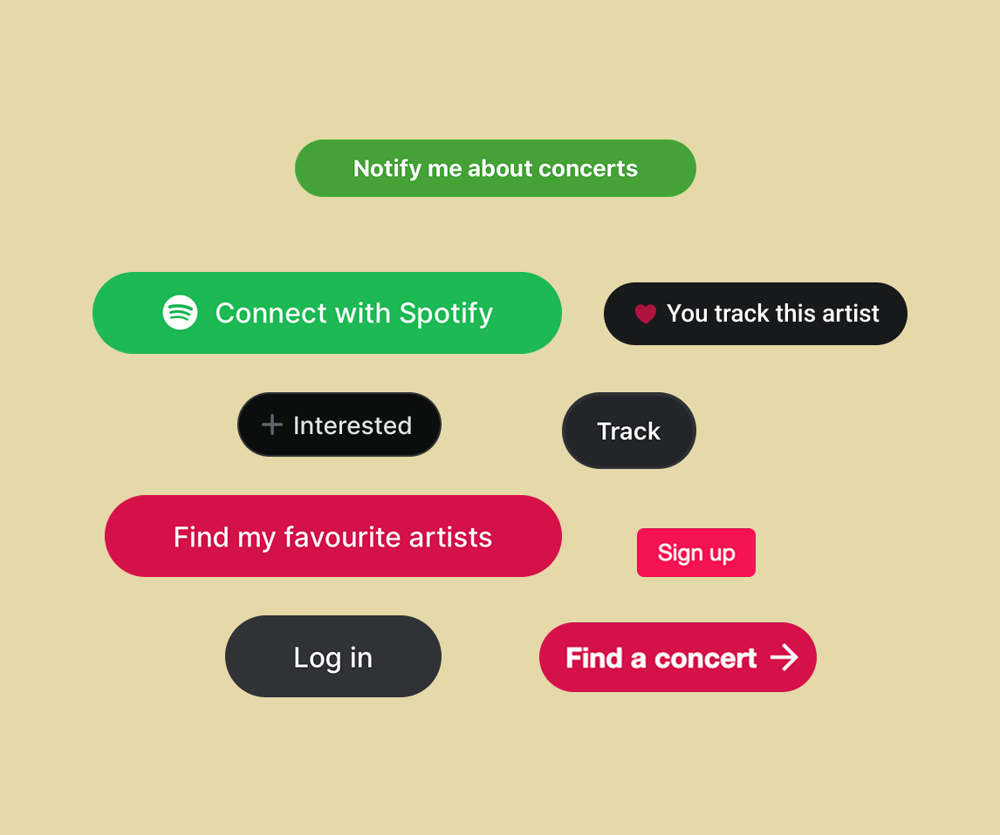
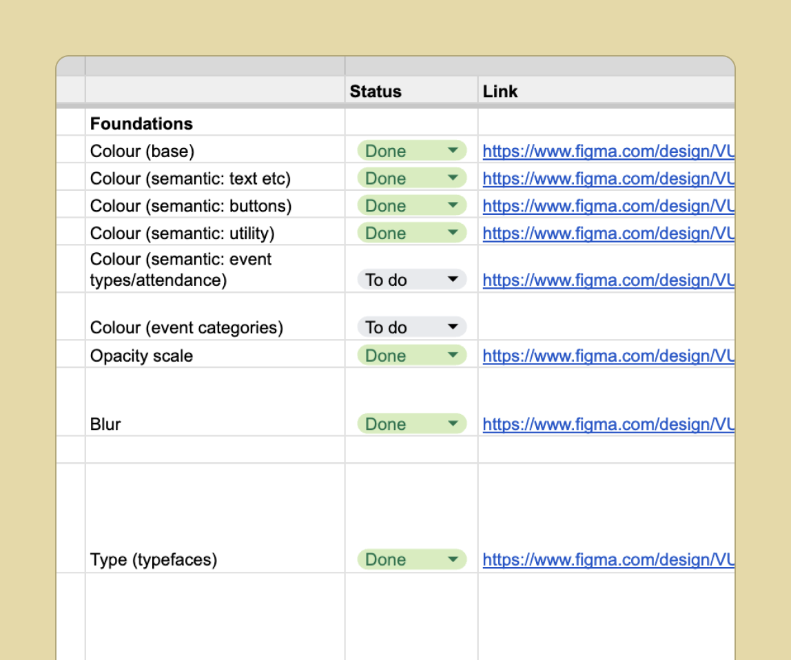
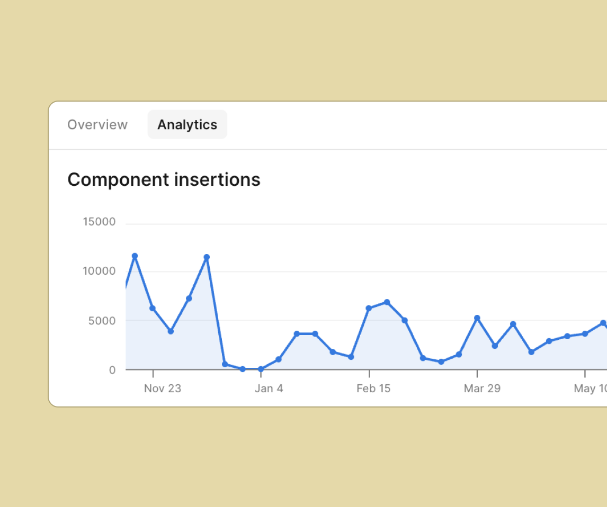
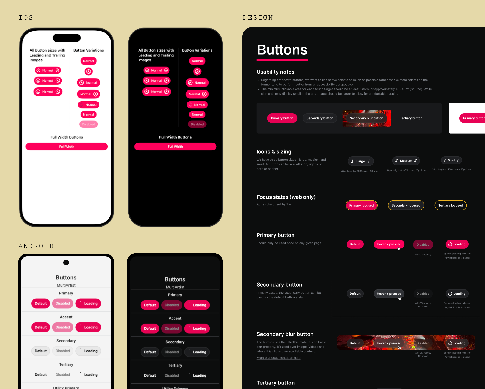
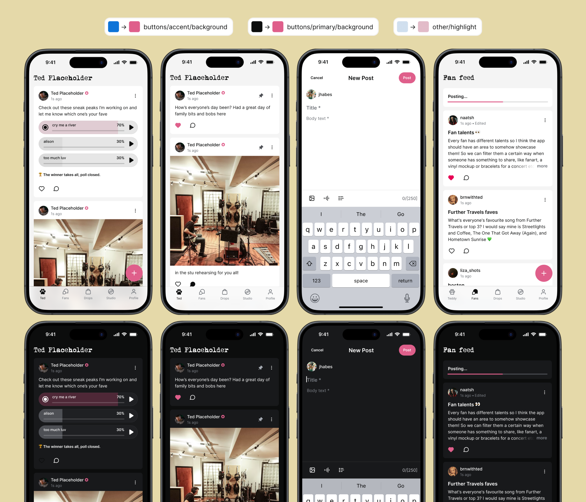
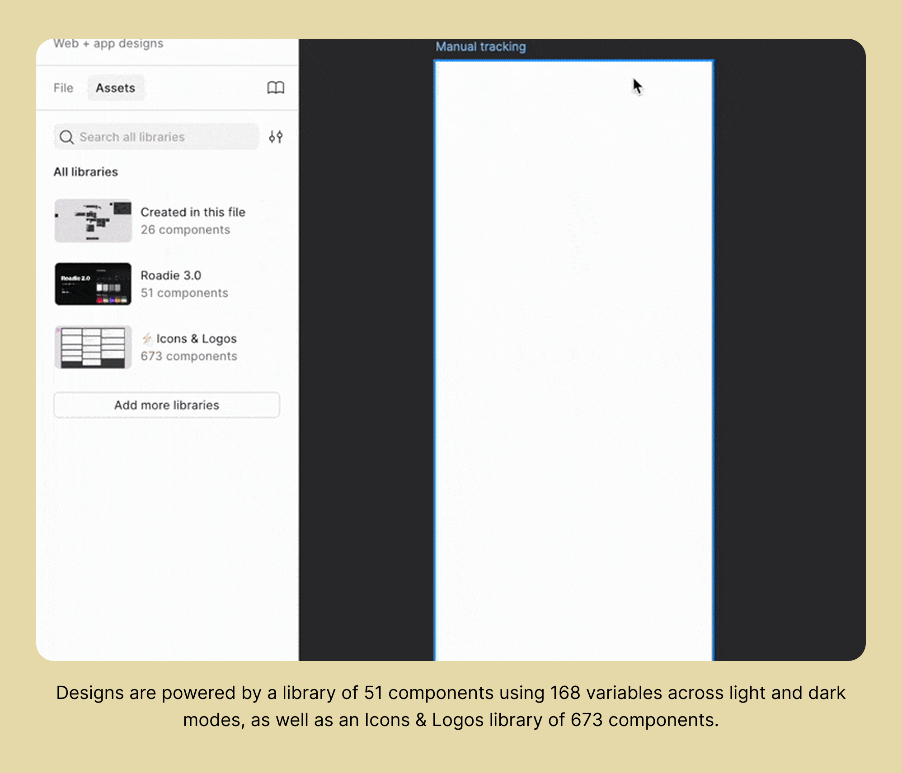

Overview
Songkick's existing design system, called Roadie, existed in Figma — but was rarely used. Engineers and designers were routinely rebuilding components and setting new styles from scratch rather than reusing from the library. This led to component divergence and friction that threatened delivery speed.
I initiated and led a cross-functional initiative to create a unified component library — Roadie 2.0 — starting with comprehensive Figma and code audits, and working closely with engineering partners across three platforms.
Core problem
Existing 'Roadie' library existed but wasn't widely adopted. Every new feature meant rebuilding components individually — creating inconsistency, slowing delivery, and accumulating design debt across all platforms.
Approach
Brought engineering partners on board early. Conducted comprehensive Figma and code audits across React Native and Native (iOS/Android) codebases. Goal: one design source in Figma, three consistent code implementations.
Outcome
168 variables and 59 styles across light and dark mode, available in Figma and all codebases — resulting in an estimated 40% increase in engineering efficiency and 50% in design.

The foundations layer — covering type, colour, spacing, radius, opacity, and blur across light and dark modes

The foundations layer — covering type, colour, spacing, radius, opacity, and blur across light and dark modes

The foundations layer — covering type, colour, spacing, radius, opacity, and blur across light and dark modes
Cross-platform parity
The central challenge was designing a unified system that served both the React Native team and the Native (iOS/Android) team — three distinct codebases with different technical constraints and conventions.
I established rigorous cross-functional governance to link a single design source in Figma to all three implementations. Platform-specific limitations — relating to blur, stroke transparency, and modal behaviour — were proactively addressed and documented as exceptions rather than workarounds, allowing us to maintain maximum platform parity without compromising component quality.

3 token changes → full-app reskin across iOS and Android, deployed in hours instead of days
Roadie in action: leveraging colour tokens
During the promotional window for a major artist's album release, the business asked for a full-app visual reskin to match the album's distinct pink colour palette. Previously, this would have required designers and engineers to manually update hundreds of individual instances one by one — days of work.
Leveraging the new design system, we treated this as a simple theming exercise: we only needed to change 3 core colour tokens within our shared library. The change instantly and consistently propagated across hundreds of instances on both Android and iOS.
"Okay so, now I have every single button in pink on my iPad... and I just wanna say it's so cute 🥰🥰 App Gods, love that!" — User reaction on social media

3 token changes → full-app reskin across iOS and Android, deployed in hours instead of days
Outcomes

138 of 197 UI code files referencing Roadie 2.0 within one year of launch — ~70% codebase adoption
Team feedback
"The biggest area of improvement is we can quickly map the Figma to the code, so we don't need to look into the specific values for colour hex codes, opacity, etc." — iOS Lead
"I deleted a tonne of code because of the design system. It's been a game changer for us." — iOS Engineer
"Love the new design system. Not easy to design for two apps at the same time but it looks amazing and is super easy to use." — Android Lead